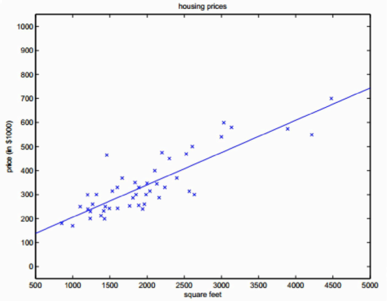

<!DOCTYPE html>
<html lang=zh>
<head>
    <meta charset="utf-8">
    
    <title>算法03：回归算法 | Tyrival</title>
    <meta name="viewport" content="width=device-width, initial-scale=1, maximum-scale=1" />
    <meta name="description" content="回归算法（Regression）是研究自变量和因变量之间关系的一种预测模型技术。回归算法与分类算法类似，是基于已有的数据样本，对未来的样本进行预测。回归算法与分类算法也有不同，主要区别在于输出变量的类型。回归是定量的输出，即连续变量的预测；分类是定性的输出，即离散变量的预测。例如：预测明天的温度，是回归任务；预测明天是晴天还是雨天，是分类任务。回归算法可以通过三种方法分类：自变量的个数、因变量">
<meta name="keywords" content="algorithm">
<meta property="og:type" content="article">
<meta property="og:title" content="算法03：回归算法">
<meta property="og:url" content="http://tyrival.github.io/posts/algorithm-03/index.html">
<meta property="og:site_name" content="Tyrival">
<meta property="og:description" content="回归算法（Regression）是研究自变量和因变量之间关系的一种预测模型技术。回归算法与分类算法类似，是基于已有的数据样本，对未来的样本进行预测。回归算法与分类算法也有不同，主要区别在于输出变量的类型。回归是定量的输出，即连续变量的预测；分类是定性的输出，即离散变量的预测。例如：预测明天的温度，是回归任务；预测明天是晴天还是雨天，是分类任务。回归算法可以通过三种方法分类：自变量的个数、因变量">
<meta property="og:locale" content="zh-CN">
<meta property="og:image" content="http://tyrival.github.io/posts/algorithm-03/lr-01.png">
<meta property="og:updated_time" content="2018-02-26T03:22:21.494Z">
<meta name="twitter:card" content="summary">
<meta name="twitter:title" content="算法03：回归算法">
<meta name="twitter:description" content="回归算法（Regression）是研究自变量和因变量之间关系的一种预测模型技术。回归算法与分类算法类似，是基于已有的数据样本，对未来的样本进行预测。回归算法与分类算法也有不同，主要区别在于输出变量的类型。回归是定量的输出，即连续变量的预测；分类是定性的输出，即离散变量的预测。例如：预测明天的温度，是回归任务；预测明天是晴天还是雨天，是分类任务。回归算法可以通过三种方法分类：自变量的个数、因变量">
<meta name="twitter:image" content="http://tyrival.github.io/posts/algorithm-03/lr-01.png">
    

    

    
        <link rel="icon" href="/css/images/logo.png" />
    

    <link rel="stylesheet" href="/libs/font-awesome/css/font-awesome.min.css">
    <link rel="stylesheet" href="/libs/open-sans/styles.css">
    <link rel="stylesheet" href="/libs/source-code-pro/styles.css">

    <link rel="stylesheet" href="/css/style.css">

    <script src="/libs/jquery/2.1.3/jquery.min.js"></script>
    
    
        <link rel="stylesheet" href="/libs/lightgallery/css/lightgallery.min.css">
    
    
        <link rel="stylesheet" href="/libs/justified-gallery/justifiedGallery.min.css">
    
    
    
    


</head>

<body>
    <div id="container">
        <header id="header">
    <div id="header-main" class="header-inner">
        <div class="outer">
            <a href="/" id="logo">
                <i class="logo"></i>
                <span class="site-title">Tyrival</span>
            </a>
            <nav id="main-nav">
                
                    <a class="main-nav-link" href="http://www.tyrival.com">主页</a>
                
                    <a class="main-nav-link" href="/categories">分类</a>
                
                    <a class="main-nav-link" href="/tags">标签</a>
                
            </nav>
            
                
                <nav id="sub-nav">
                    <div class="profile" id="profile-nav">
                        <a id="profile-anchor" href="javascript:;">
                            
                            <i class="fa fa-caret-down"></i>
                        </a>
                    </div>
                </nav>
            
            <div id="search-form-wrap">

    <form class="search-form">
        <input type="text" class="ins-search-input search-form-input" placeholder="搜索" />
        <button type="submit" class="search-form-submit"></button>
    </form>
    <div class="ins-search">
    <div class="ins-search-mask"></div>
    <div class="ins-search-container">
        <div class="ins-input-wrapper">
            <input type="text" class="ins-search-input" placeholder="想要查找什么..." />
            <span class="ins-close ins-selectable"><i class="fa fa-times-circle"></i></span>
        </div>
        <div class="ins-section-wrapper">
            <div class="ins-section-container"></div>
        </div>
    </div>
</div>
<script>
(function (window) {
    var INSIGHT_CONFIG = {
        TRANSLATION: {
            POSTS: '文章',
            PAGES: '页面',
            CATEGORIES: '分类',
            TAGS: '标签',
            UNTITLED: '(未命名)',
        },
        ROOT_URL: '/',
        CONTENT_URL: '/content.json',
    };
    window.INSIGHT_CONFIG = INSIGHT_CONFIG;
})(window);
</script>
<script src="/js/insight.js"></script>

</div>
        </div>
    </div>
    <div id="main-nav-mobile" class="header-sub header-inner">
        <table class="menu outer">
            <tr>
                
                    <td><a class="main-nav-link" href="http://www.tyrival.com">主页</a></td>
                
                    <td><a class="main-nav-link" href="/categories">分类</a></td>
                
                    <td><a class="main-nav-link" href="/tags">标签</a></td>
                
                <td>
                    
    <div class="search-form">
        <input type="text" class="ins-search-input search-form-input" placeholder="搜索" />
    </div>

                </td>
            </tr>
        </table>
    </div>
</header>

        <div class="outer">
            
                

<aside id="profile">
    <div class="inner profile-inner">
        <div class="base-info profile-block">
            
            <h2 id="name">周晨煜</h2>
            <h3 id="title">程序员 &amp; 自学狂</h3>
            <span id="location"><i class="fa fa-map-marker"></i>无锡, 中国</span>
            <a id="follow" target="_blank" href="https://github.com/tyrival">关注我</a>
        </div>
        <div class="article-info profile-block">
            <div class="article-info-block">
                38
                <span>文章</span>
            </div>
            <div class="article-info-block">
                18
                <span>标签</span>
            </div>
        </div>
        
        <div class="profile-block social-links">
            <table>
                <tr>
                    
                    
                    <td>
                        <a href="https://github.com/tyrival" target="_blank" title="github" class=tooltip>
                            <i class="fa fa-github"></i>
                        </a>
                    </td>
                    
                    <td>
                        <a href="https://twitter.com/Tyrival" target="_blank" title="twitter" class=tooltip>
                            <i class="fa fa-twitter"></i>
                        </a>
                    </td>
                    
                </tr>
            </table>
        </div>
        
    </div>
</aside>

            
            <section id="main"><article id="post-algorithm-03" class="article article-type-post" itemscope itemprop="blogPost">
    <div class="article-inner">
        
        
            <header class="article-header">
                
    
        <h1 class="article-title" itemprop="name">
            算法03：回归算法
        </h1>
    

                
                    <div class="article-meta">
                        
    <div class="article-date">
        <i class="fa fa-calendar"></i>
        <a href="/posts/algorithm-03/">
            <time datetime="2018-02-25T09:58:52.824Z" itemprop="datePublished">2018-02-25</time>
        </a>
    </div>


                        
    <div class="article-category">
    	<i class="fa fa-folder"></i>
        <a class="article-category-link" href="/categories/算法/">算法</a>
    </div>

                        
    <div class="article-tag">
        <i class="fa fa-tag"></i>
        <a class="tag-link" href="/tags/algorithm/">algorithm</a>
    </div>

                    </div>
                
            </header>
        
        
        <div class="article-entry" itemprop="articleBody">
        
            
            <p><strong>回归算法</strong>（Regression）是研究自变量和因变量之间关系的一种预测模型技术。回归算法与分类算法类似，是基于已有的数据样本，对未来的样本进行预测。回归算法与分类算法也有不同，主要区别在于输出变量的类型。回归是定量的输出，即连续变量的预测；分类是定性的输出，即离散变量的预测。例如：预测明天的温度，是回归任务；预测明天是晴天还是雨天，是分类任务。回归算法可以通过三种方法分类：自变量的个数、因变量的类型和回归线的形状，主要包括线性回归、逻辑回归、多项式回归、逐步回归等多种算法。</p>
<a id="more"></a>
<p><strong>均值（mean）</strong>：又称平均数或平均值</p>
<p>$$x=\cfrac{\sum_{i=1}^n x_i}{n}$$</p>
<p><strong>中位数（median）</strong>：将数据中各数值按照大小顺序排列，位于中间位置的变量</p>
<p><strong>众数（mode）</strong>：数据中出现次数最多的数</p>
<p><strong>方差（variance）</strong>：描述离散程度的衡量方式，此处的$x$为平均数</p>
<p>$$s^2=\cfrac{\sum_{i=1}^n (x_i-x)^2}{n}$$</p>
<p><strong>标准差（standard deviation）</strong>：将方差开方就得到标准差</p>
<hr>
<h1 id="线性回归（Linear-Regression）"><a href="#线性回归（Linear-Regression）" class="headerlink" title="线性回归（Linear Regression）"></a>线性回归（Linear Regression）</h1><p>对于一组分布在二维坐标系上的样本，线性回归的目标是找到一条描述样本变化规律的线，使所有样本尽可能接近这条线。</p>
<p></p>
<p>例如：找到房屋的面积、房间数对价格的影响，现有以下数据：</p>
<table>
<thead>
<tr>
<th style="text-align:center">面积</th>
<th style="text-align:center">房间数</th>
<th style="text-align:center">价格</th>
</tr>
</thead>
<tbody>
<tr>
<td style="text-align:center">210</td>
<td style="text-align:center">3</td>
<td style="text-align:center">40.0</td>
</tr>
<tr>
<td style="text-align:center">160</td>
<td style="text-align:center">3</td>
<td style="text-align:center">33.1</td>
</tr>
<tr>
<td style="text-align:center">240</td>
<td style="text-align:center">3</td>
<td style="text-align:center">36.9</td>
</tr>
<tr>
<td style="text-align:center">141</td>
<td style="text-align:center">2</td>
<td style="text-align:center">23.2</td>
</tr>
<tr>
<td style="text-align:center">300</td>
<td style="text-align:center">4</td>
<td style="text-align:center">54.0</td>
</tr>
</tbody>
</table>
<p>假设有一个公式，能够根据面积和房间数算出价格，这个公式不仅满足现在的样本数据，在新的数据上也要尽量准确，假定这个公式是线性函数：</p>
<p>$$h(x)=\theta_0+\theta_1 x_1+\theta_2 x_2$$</p>
<p>其中，$x_1$和$x_2$分别表示面积和房间数，$\theta$表示权重，$h(x)$是房屋的价格。</p>
<p>首先把他看作一条$y=wx+b$的直线，其中$w$就是权重$\theta$，$x$为样本数据，$b$为截距，为了公式推导的方便，我们设$x_0=1$，上面的公式简化如下：</p>
<p>$$h(x)=\theta_0 x_0+\theta_1 x_1+\theta_2 x_2=\sum_{i=0}^n \theta_i x_i=\theta^Tx$$</p>
<p>现在只需得到$\theta$，即可得到最终的模型。想要模型能够准确描述当前数据，最理想的情况是这条线能通过所有样本数据，但实际上这几乎不可能，所以只能使$\theta$能够在当前数据集上尽可能准确。反过来想，当找到这条直线后，每个样本距离这条直线都存在一定的误差，即截距，当总截距最小时，这条直线就是我们需要的模型，所以我们只要找到截距与模型间的关系，就可以获得模型，这个关系被称为<strong>损失函数</strong>。</p>
<p>$$J(\theta)=\cfrac{1}{2m}\sum_{i=1}^m (h(x^{(i)})-y^{(i)})^2$$</p>
<p>其中，$m$为样本数量，按照这个公式，求解出使损失函数最小的$\theta$。</p>
<hr>
<h1 id="逻辑回归（Logistic-Regression）"><a href="#逻辑回归（Logistic-Regression）" class="headerlink" title="逻辑回归（Logistic Regression）"></a>逻辑回归（Logistic Regression）</h1><p>逻辑回归就是将上面线性回归预测的值，转化为离散的结果进行输出。逻辑回归虽然名字里带回归，实际上是分类，只是过程中用到了回归算法。逻辑回归的具体算法此处暂不详述。</p>

        
        </div>
        <footer class="article-footer">
            <div class="share-container">


</div>

    <a data-url="http://tyrival.github.io/posts/algorithm-03/" data-id="cjgs1ibww0008glcwekmiwdcy" class="article-share-link"><i class="fa fa-share"></i>分享到</a>
<script>
    (function ($) {
        // Prevent duplicate binding
        if (typeof(__SHARE_BUTTON_BINDED__) === 'undefined' || !__SHARE_BUTTON_BINDED__) {
            __SHARE_BUTTON_BINDED__ = true;
        } else {
            return;
        }
        $('body').on('click', function() {
            $('.article-share-box.on').removeClass('on');
        }).on('click', '.article-share-link', function(e) {
            e.stopPropagation();

            var $this = $(this),
                url = $this.attr('data-url'),
                encodedUrl = encodeURIComponent(url),
                id = 'article-share-box-' + $this.attr('data-id'),
                offset = $this.offset(),
                box;

            if ($('#' + id).length) {
                box = $('#' + id);

                if (box.hasClass('on')){
                    box.removeClass('on');
                    return;
                }
            } else {
                var html = [
                    '<div id="' + id + '" class="article-share-box">',
                        '<input class="article-share-input" value="' + url + '">',
                        '<div class="article-share-links">',
                            '<a href="https://twitter.com/intent/tweet?url=' + encodedUrl + '" class="fa fa-twitter article-share-twitter" target="_blank" title="Twitter"></a>',
                            '<a href="https://www.facebook.com/sharer.php?u=' + encodedUrl + '" class="fa fa-facebook article-share-facebook" target="_blank" title="Facebook"></a>',
                            '<a href="http://pinterest.com/pin/create/button/?url=' + encodedUrl + '" class="fa fa-pinterest article-share-pinterest" target="_blank" title="Pinterest"></a>',
                            '<a href="https://plus.google.com/share?url=' + encodedUrl + '" class="fa fa-google article-share-google" target="_blank" title="Google+"></a>',
                        '</div>',
                    '</div>'
                ].join('');

              box = $(html);

              $('body').append(box);
            }

            $('.article-share-box.on').hide();

            box.css({
                top: offset.top + 25,
                left: offset.left
            }).addClass('on');

        }).on('click', '.article-share-box', function (e) {
            e.stopPropagation();
        }).on('click', '.article-share-box-input', function () {
            $(this).select();
        }).on('click', '.article-share-box-link', function (e) {
            e.preventDefault();
            e.stopPropagation();

            window.open(this.href, 'article-share-box-window-' + Date.now(), 'width=500,height=450');
        });
    })(jQuery);
</script>

            
    

        </footer>
    </div>
    
        
<nav id="article-nav">
    
        <a href="/posts/python-01/" id="article-nav-newer" class="article-nav-link-wrap">
            <strong class="article-nav-caption">上一篇</strong>
            <div class="article-nav-title">
                
                    Python01：MacOS升级Python2到Python3，以及误删系统自带Python的解决方法
                
            </div>
        </a>
    
    
        <a href="/posts/algorithm-02/" id="article-nav-older" class="article-nav-link-wrap">
            <strong class="article-nav-caption">下一篇</strong>
            <div class="article-nav-title">算法02：分类算法</div>
        </a>
    
</nav>


    
</article>


    
    
        <section id="comments">
	<div id="commentContainer"></div>
</section>
    

</section>
            
                
<aside id="sidebar">
   
        
    <div class="widget-wrap">
        <h3 class="widget-title">最新文章</h3>
        <div class="widget">
            <ul id="recent-post" class="no-thumbnail">
                
                    <li>
                        
                        <div class="item-inner">
                            <p class="item-category"><a class="article-category-link" href="/categories/工具/">工具</a></p>
                            <p class="item-title"><a href="/posts/git-multi-account/" class="title">MacOS下配置Github多账号教程</a></p>
                            <p class="item-date"><time datetime="2018-05-04T13:42:21.077Z" itemprop="datePublished">2018-05-04</time></p>
                        </div>
                    </li>
                
                    <li>
                        
                        <div class="item-inner">
                            <p class="item-category"><a class="article-category-link" href="/categories/前端/">前端</a></p>
                            <p class="item-title"><a href="/posts/two-way-data-binding/" class="title">前端双向数据绑定的优势</a></p>
                            <p class="item-date"><time datetime="2018-03-16T13:17:50.380Z" itemprop="datePublished">2018-03-16</time></p>
                        </div>
                    </li>
                
                    <li>
                        
                        <div class="item-inner">
                            <p class="item-category"><a class="article-category-link" href="/categories/前端/">前端</a></p>
                            <p class="item-title"><a href="/posts/cors-solutions/" class="title">前端跨域及解决方案</a></p>
                            <p class="item-date"><time datetime="2018-03-15T01:41:08.747Z" itemprop="datePublished">2018-03-15</time></p>
                        </div>
                    </li>
                
                    <li>
                        
                        <div class="item-inner">
                            <p class="item-category"><a class="article-category-link" href="/categories/后端/">后端</a></p>
                            <p class="item-title"><a href="/posts/java-reflect-invoke-method/" class="title">Java反射：通过方法名调用方法</a></p>
                            <p class="item-date"><time datetime="2018-03-08T01:57:44.384Z" itemprop="datePublished">2018-03-08</time></p>
                        </div>
                    </li>
                
                    <li>
                        
                        <div class="item-inner">
                            <p class="item-category"><a class="article-category-link" href="/categories/后端/">后端</a></p>
                            <p class="item-title"><a href="/posts/java-dynamic-compile/" class="title">Java动态编译</a></p>
                            <p class="item-date"><time datetime="2018-03-08T00:44:12.000Z" itemprop="datePublished">2018-03-08</time></p>
                        </div>
                    </li>
                
            </ul>
        </div>
    </div>

    
        
    <div class="widget-wrap">
        <h3 class="widget-title">分类</h3>
        <div class="widget">
            <ul class="category-list"><li class="category-list-item"><a class="category-list-link" href="/categories/hadoop/">hadoop</a><span class="category-list-count">8</span></li><li class="category-list-item"><a class="category-list-link" href="/categories/iOS/">iOS</a><span class="category-list-count">1</span></li><li class="category-list-item"><a class="category-list-link" href="/categories/前端/">前端</a><span class="category-list-count">14</span></li><li class="category-list-item"><a class="category-list-link" href="/categories/后端/">后端</a><span class="category-list-count">3</span></li><li class="category-list-item"><a class="category-list-link" href="/categories/工具/">工具</a><span class="category-list-count">2</span></li><li class="category-list-item"><a class="category-list-link" href="/categories/服务器/">服务器</a><span class="category-list-count">2</span></li><li class="category-list-item"><a class="category-list-link" href="/categories/硬件/">硬件</a><span class="category-list-count">2</span></li><li class="category-list-item"><a class="category-list-link" href="/categories/算法/">算法</a><span class="category-list-count">3</span></li><li class="category-list-item"><a class="category-list-link" href="/categories/系统/">系统</a><span class="category-list-count">3</span></li></ul>
        </div>
    </div>

    
        
    <div class="widget-wrap">
        <h3 class="widget-title">标签</h3>
        <div class="widget">
            <ul class="tag-list"><li class="tag-list-item"><a class="tag-list-link" href="/tags/algorithm/">algorithm</a><span class="tag-list-count">3</span></li><li class="tag-list-item"><a class="tag-list-link" href="/tags/cloud/">cloud</a><span class="tag-list-count">1</span></li><li class="tag-list-item"><a class="tag-list-link" href="/tags/css/">css</a><span class="tag-list-count">2</span></li><li class="tag-list-item"><a class="tag-list-link" href="/tags/database/">database</a><span class="tag-list-count">2</span></li><li class="tag-list-item"><a class="tag-list-link" href="/tags/f-k-ie/">f**k ie</a><span class="tag-list-count">3</span></li><li class="tag-list-item"><a class="tag-list-link" href="/tags/git/">git</a><span class="tag-list-count">2</span></li><li class="tag-list-item"><a class="tag-list-link" href="/tags/hadoop/">hadoop</a><span class="tag-list-count">8</span></li><li class="tag-list-item"><a class="tag-list-link" href="/tags/java/">java</a><span class="tag-list-count">2</span></li><li class="tag-list-item"><a class="tag-list-link" href="/tags/javascript/">javascript</a><span class="tag-list-count">12</span></li><li class="tag-list-item"><a class="tag-list-link" href="/tags/less/">less</a><span class="tag-list-count">1</span></li><li class="tag-list-item"><a class="tag-list-link" href="/tags/linux/">linux</a><span class="tag-list-count">3</span></li><li class="tag-list-item"><a class="tag-list-link" href="/tags/mac/">mac</a><span class="tag-list-count">1</span></li><li class="tag-list-item"><a class="tag-list-link" href="/tags/python/">python</a><span class="tag-list-count">1</span></li><li class="tag-list-item"><a class="tag-list-link" href="/tags/raspberry/">raspberry</a><span class="tag-list-count">2</span></li><li class="tag-list-item"><a class="tag-list-link" href="/tags/server/">server</a><span class="tag-list-count">6</span></li><li class="tag-list-item"><a class="tag-list-link" href="/tags/swift/">swift</a><span class="tag-list-count">1</span></li><li class="tag-list-item"><a class="tag-list-link" href="/tags/tomcat/">tomcat</a><span class="tag-list-count">1</span></li><li class="tag-list-item"><a class="tag-list-link" href="/tags/vue/">vue</a><span class="tag-list-count">2</span></li></ul>
        </div>
    </div>

    
        
    <div class="widget-wrap">
        <h3 class="widget-title">标签云</h3>
        <div class="widget tagcloud">
            <a href="/tags/algorithm/" style="font-size: 14px;">algorithm</a> <a href="/tags/cloud/" style="font-size: 10px;">cloud</a> <a href="/tags/css/" style="font-size: 12px;">css</a> <a href="/tags/database/" style="font-size: 12px;">database</a> <a href="/tags/f-k-ie/" style="font-size: 14px;">f**k ie</a> <a href="/tags/git/" style="font-size: 12px;">git</a> <a href="/tags/hadoop/" style="font-size: 18px;">hadoop</a> <a href="/tags/java/" style="font-size: 12px;">java</a> <a href="/tags/javascript/" style="font-size: 20px;">javascript</a> <a href="/tags/less/" style="font-size: 10px;">less</a> <a href="/tags/linux/" style="font-size: 14px;">linux</a> <a href="/tags/mac/" style="font-size: 10px;">mac</a> <a href="/tags/python/" style="font-size: 10px;">python</a> <a href="/tags/raspberry/" style="font-size: 12px;">raspberry</a> <a href="/tags/server/" style="font-size: 16px;">server</a> <a href="/tags/swift/" style="font-size: 10px;">swift</a> <a href="/tags/tomcat/" style="font-size: 10px;">tomcat</a> <a href="/tags/vue/" style="font-size: 12px;">vue</a>
        </div>
    </div>

    
        
    <div class="widget-wrap widget-list">
        <h3 class="widget-title">链接</h3>
        <div class="widget">
            <ul>
                
            </ul>
        </div>
    </div>


    
    <div id="toTop" class="fa fa-angle-up"></div>
</aside>

            
        </div>
        <footer id="footer">
    <div class="outer">
        <div id="footer-info" class="inner">
            &copy; 2018 Tyrival<br>
            Powered by <a href="http://hexo.io/" target="_blank">Hexo</a>. Theme by <a href="http://github.com/ppoffice">PPOffice</a>
        </div>
    </div>
</footer>
        


    
        <script src="/libs/lightgallery/js/lightgallery.min.js"></script>
        <script src="/libs/lightgallery/js/lg-thumbnail.min.js"></script>
        <script src="/libs/lightgallery/js/lg-pager.min.js"></script>
        <script src="/libs/lightgallery/js/lg-autoplay.min.js"></script>
        <script src="/libs/lightgallery/js/lg-fullscreen.min.js"></script>
        <script src="/libs/lightgallery/js/lg-zoom.min.js"></script>
        <script src="/libs/lightgallery/js/lg-hash.min.js"></script>
        <script src="/libs/lightgallery/js/lg-share.min.js"></script>
        <script src="/libs/lightgallery/js/lg-video.min.js"></script>
    
    
        <script src="/libs/justified-gallery/jquery.justifiedGallery.min.js"></script>
    
    
        <script type="text/x-mathjax-config">
            MathJax.Hub.Config({ tex2jax: { inlineMath: [['$','$'], ['\\(','\\)']] } });
        </script>
        <script src="https://cdn.mathjax.org/mathjax/latest/MathJax.js?config=TeX-MML-AM_CHTML"></script>
    


<!-- Custom Scripts -->
<script src="/js/main.js"></script>

    </div>
</body>
</html>